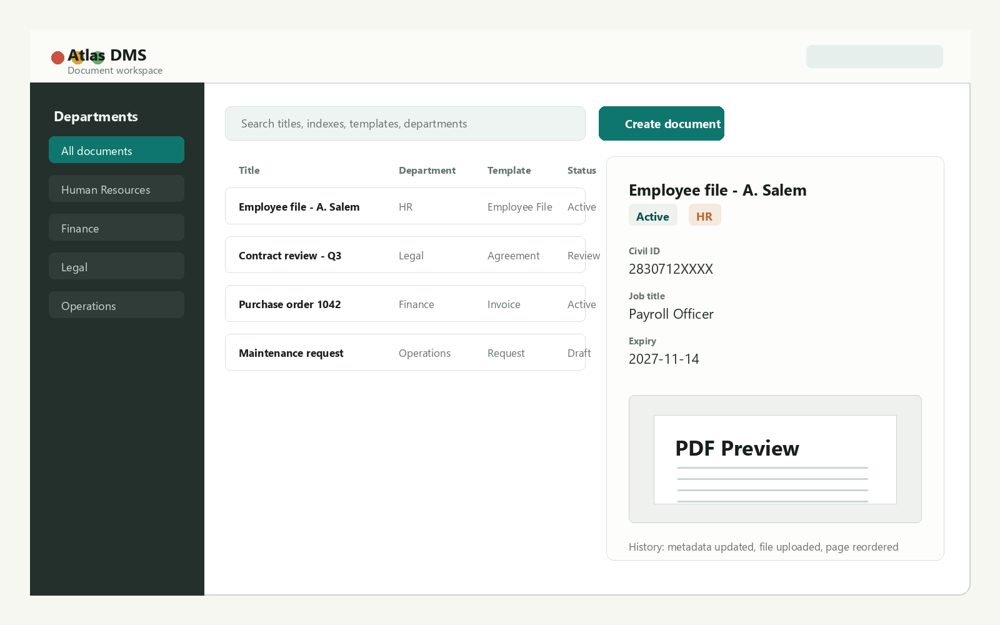
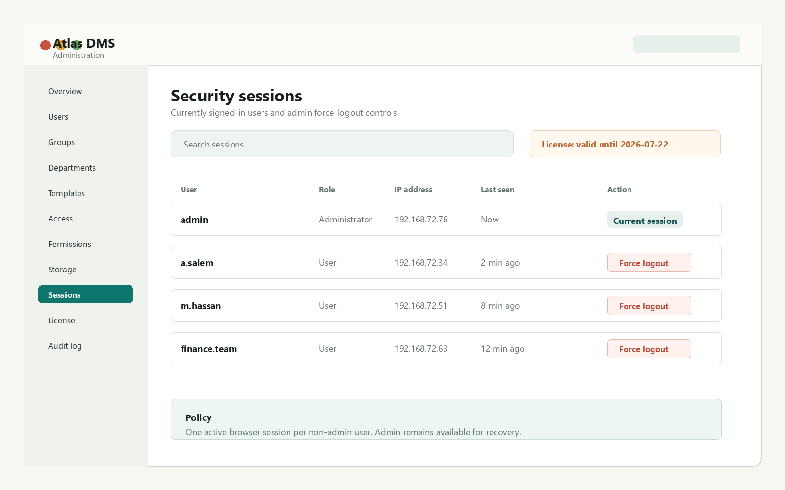
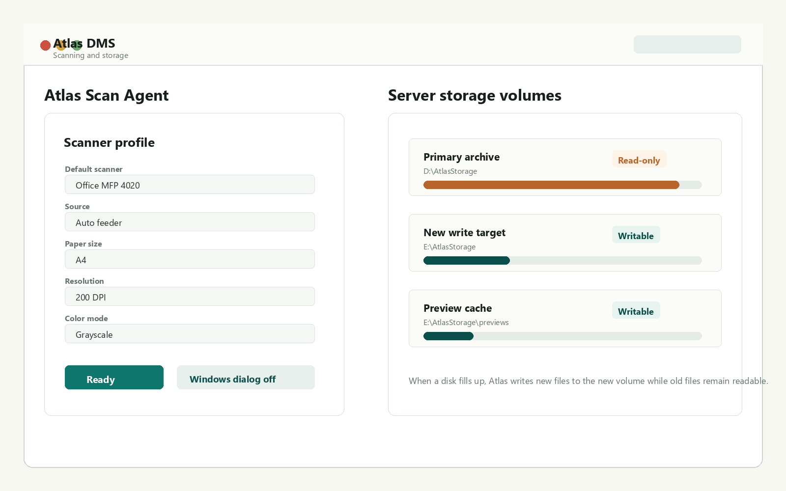

Create document types with typed indexes, required file categories, title generation, and version-safe template edits.
Private on-prem document management
Atlas DMS
Structured records, controlled access, scanning, audit history, and local storage for teams that need their documents to stay under their own operational control.
Built for controlled document operations
Atlas combines document records, metadata, access rules, file handling, scanning, audit, and licensing into one on-prem system.
Control who can view, create, edit, delete, print, download, scan, export, and manage documents by department and template.
Review PDFs and images, edit metadata, upload files, replace versions, merge and split PDFs, and insert pages in context.
Let users scan from their own Windows PCs into the browser while files land safely in the server document store.
Keep document history, file versions, admin audit events, session controls, and operational reports available to administrators.
Add a new disk as the write target when old storage fills up, while keeping existing files readable from their original location.
Use signed offline licenses with expiry, server fingerprint binding, and active-user limits for controlled evaluations.
Run bilingual document and admin workflows with Arabic labels, right-to-left layout support, and localized system messages.
Detailed capabilities
Atlas covers the full document lifecycle: configuration, capture, controlled work, search, storage growth, and trial licensing.
- Template-driven records with typed index fields
- Required and searchable metadata
- Template version safety for existing documents
- Generated titles from selected index values
- Global and department-specific templates
- PDF and image upload with browser preview
- Immutable file versions after replacement
- Merge and split PDF workflows
- Insert, reorder, and delete generated pages
- Document history for file and metadata activity
- User and group permissions
- Department, folder, template, and document access
- Separate view, create, edit, print, download, scan, export, and manage rights
- Document visibility rules by template field values
- Admin session controls and force logout
- Windows workstation scan agent
- Default scanner remembered per PC
- Source, A4, DPI, and color mode profile
- Feeder scans into one multi-page PDF
- Multi-page insertion into existing files
- Search by metadata, title, template, department, and status
- Advanced search conditions
- Saved filters
- Excel and ZIP exports where enabled
- User, department, lifecycle, and missing-file reports
- Filesystem and S3-compatible storage options
- Storage volumes for adding new disks
- Old volumes remain readable after write failover
- Offline signed licenses
- Machine-locked 30-day trials and user limits
From capture to controlled access
Atlas keeps the document workflow practical: create a record, attach or scan files, control access, and preserve history.
1
Define templates and departments
Admins configure document types, index fields, file requirements, and allowed departments.
2
Create or scan documents
Users upload files or scan from a workstation agent into structured document records.
3
Search, review, and audit
Teams find records through metadata and file state while admins retain visibility into changes.

Product views
These public-safe screenshots use synthetic sample data and do not show customer documents or private system details.
Document workspace
Search, metadata, file categories, preview, versions, and page tools in one screen.

Admin and security
Users, groups, departments, permissions, active sessions, audit, storage, and licensing.

Scanning and storage
Workstation scan profile, server upload path, and storage volume failover for growing archives.
Designed for on-prem trials
Atlas is intended for controlled deployments where the customer keeps documents on their own server and the vendor keeps private source and license tooling private.
Run Atlas on a Windows server on the customer network, with browser access from user workstations.
Use signed offline licenses with expiry and server fingerprint binding for 30-day trials or paid deployments.
Public material stays separate from the private codebase, release packaging, vendor keys, and customer data.
Evaluate Atlas DMS
For a controlled demo, trial license, or deployment discussion, contact the Atlas vendor. Source code and production packages are distributed privately.